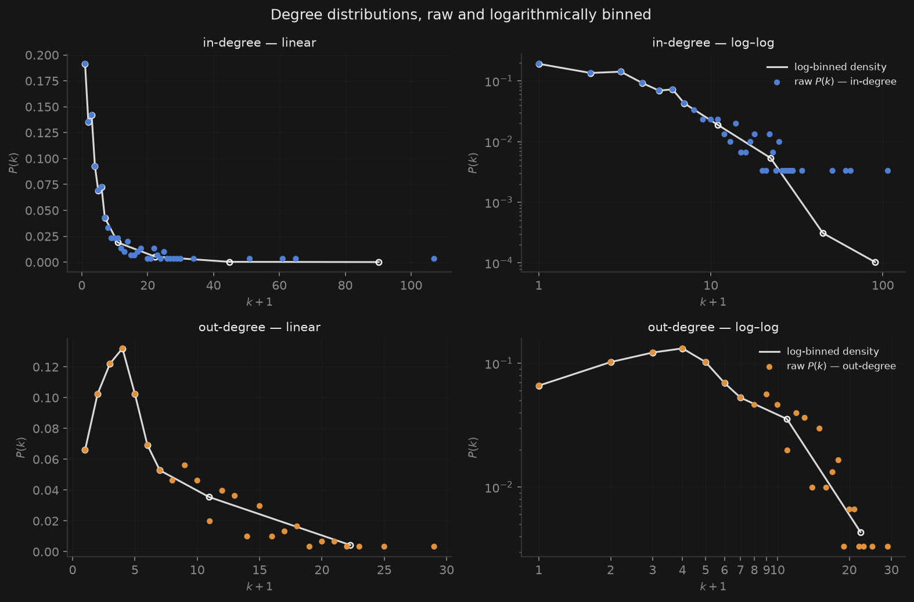
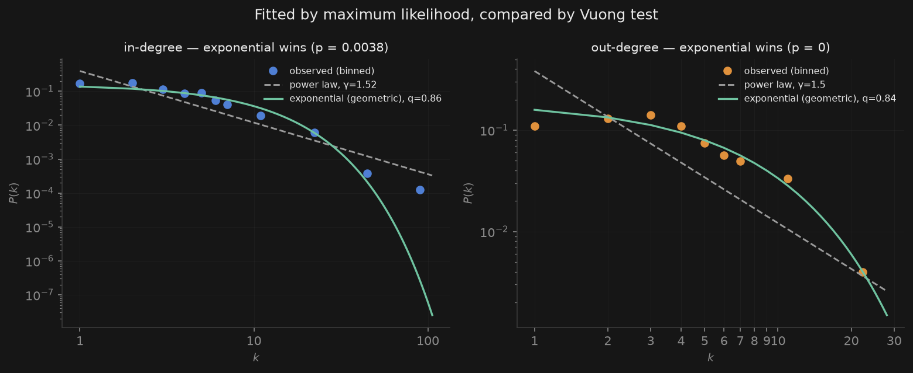
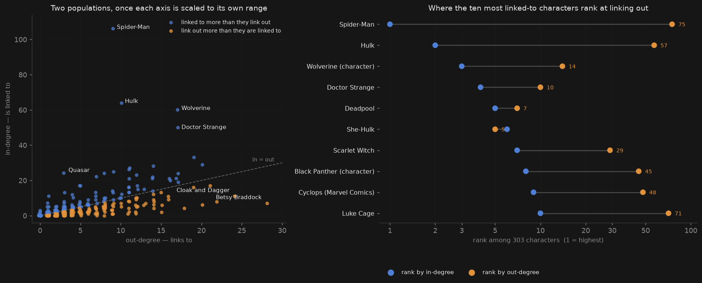
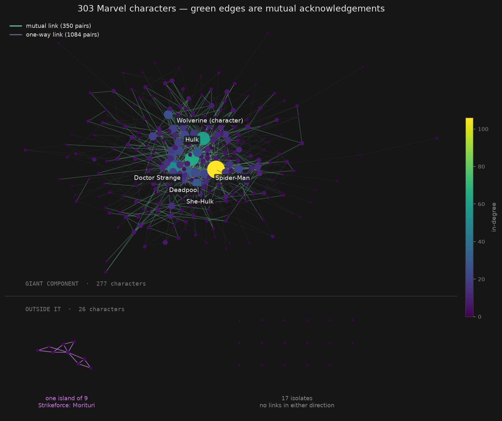
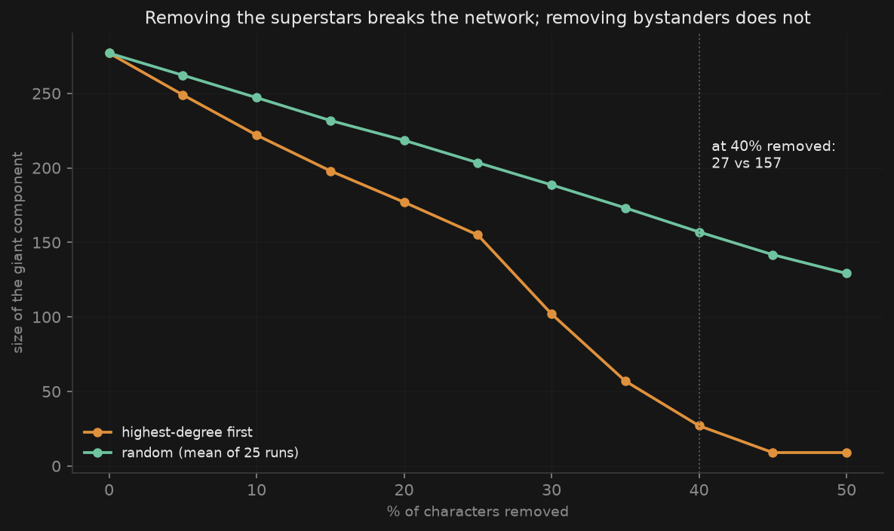
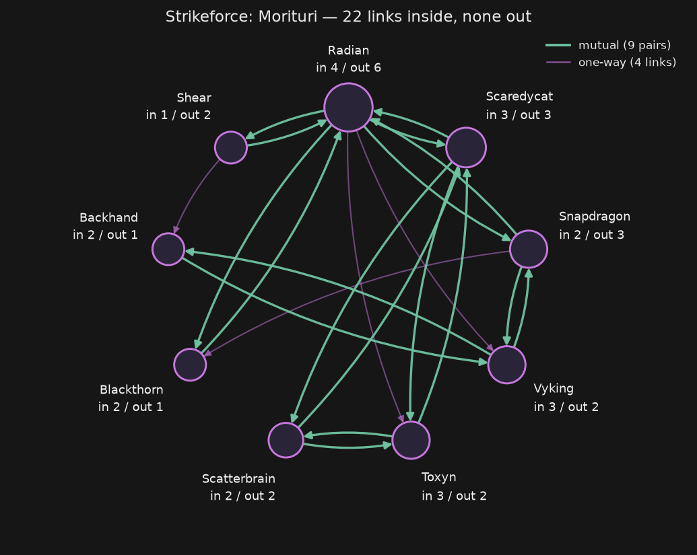

What we asked
The dataset is directed. An edge goes from A to B when A's Wikipedia article links to B's. That's a one-way statement — Abomination's article mentions Hulk, but Hulk's article doesn't mention Abomination back.
So every character has two numbers: how many articles point at them, and how many they point out to. Our question: are those the same people? If a superstar is someone others talk about, does being talked about go with doing the talking?
39% of links are one half of a mutual pair. Ignore direction and 1,784 becomes 1,434, because those 350 pairs get counted twice one way and once the other.
What we did
We loaded the snapshot as a directed graph, taking the character list from the roster file rather than the edge list. This matters more than it sounds. 17 characters never appear in the edge list, so building from edges alone gives you 286 characters instead of 303 — silently, with no error. It also pushes the mean degree from 9.47 up to 10.03.
Then: degree distributions with log binning, a test of which distribution family fits, the in/out comparison, a robustness experiment, and the components.

Neither distribution is a power law
A log–log plot invites you to draw a straight line through it. Don't. Fitting a line to unbinned log-frequency points is exactly the thing binning exists to replace, and it will happily report a power law in data that isn't one.
We made the case three ways instead. Each stands on its own.
- Which model fits better? Fit both by maximum likelihood and compare log-likelihoods. The exponential wins by 47 units for in-degree and 137 for out-degree. No test needed — this is just "which curve is closer", as a number.
- Is the power law even possible? Both fitted exponents come out below 2. A power law with γ < 2 has an infinite mean. Our characters average 5.89 links, so that's ruled out with no statistics at all.
- Is the gap real or just noise? Only this needs a test. The Vuong test compares two non-nested models and asks if the difference is bigger than sampling noise. It matters for in-degree; for out-degree the gap is so large it doesn't.
| n | log-lik. power law | log-lik. exponential | Vuong | p | Verdict | |
|---|---|---|---|---|---|---|
| in-degree | 245 | −760.7 | −713.8 | −2.89 | 0.004 | exponential |
| out-degree | 283 | −917.6 | −780.3 | −13.89 | <10⁻⁴³ | exponential |
| Higher (less negative) log-likelihood wins. "Exponential" here is the geometric distribution — the discrete version, which is the right one for whole-number degrees. | ||||||

We expect this to be the most contested thing here, so one caveat of our own: above k = 30 there are only five characters. The tail is where these two families actually differ, and ours is nearly empty.
Two different populations
Plot in-degree against out-degree and the split is obvious. In-degree runs to 106, out-degree stops at 28, so each axis needs its own range — force them to share one and the whole picture collapses into the left edge.

We kept both panels because they answer different questions. The scatter shows you where Spider-Man sits — 9 links out. The right panel shows what 9 links out actually means: 75th out of 303. You need the whole distribution to know that, and it's the number that makes the point.
So why are they different people?
Our first guess was that the big out-linkers just have longer articles. That's wrong: the blurb length in the roster correlates with neither degree (ρ = 0.02). It's a weak proxy, but the answer is a clean zero.
The second guess is more tempting and also wrong — that 28 is about the most links one author can write. But both degrees are capped at 302 here, because we only count links landing on another character in the roster. A real article links to hundreds of pages: villains, teams, cities. None of those count. Betsy Braddock's 28 is the limit of her article within our dataset, not of her article. Calling it editorial stamina would mistake our own sampling for a fact about people.
What's actually going on is simpler. Out-degree is one article's decisions. In-degree is 302 articles' decisions. No single article has a reason to list the whole roster, but 106 separate articles each had a reason to mention Spider-Man. Both distributions are forced to the same mean of 5.89 — every link adds one to somebody's out-degree and one to somebody's in-degree — so all the difference is in the spread, and in-degree's is 3.9× larger.
The clearest evidence isn't the maxima. 41 characters link out and never get linked back. Only 3 get linked to and never link out. Attention flows one way, and it pools.
You can't walk this network backwards
Ignore direction and 277 characters form one connected blob. Respect it and the largest group where everyone can reach everyone else drops to 229.
The 48 in between sit inside the giant component but outside its core: you can click your way to them, but not back. Worth noting — a few write-ups of this dataset say component sizes come in exactly three flavours, 277 / 9 / seventeen 1s, nothing in between. True if you ignore direction. Once you don't, there are 66 strongly connected components with plenty in between.

How much does the network depend on them?
Not being scale-free is supposed to mean not being hub-fragile, so we checked rather than assumed. Delete characters highest-degree-first, and compare against deleting the same number at random.

So hub-dependence doesn't need a power law. If we'd stopped at "it's not scale-free" we'd have concluded the opposite of what's true.
What surprised us
We expected the isolates. We didn't expect the island.
There are 19 components: the giant one, seventeen single characters, and one cluster of exactly nine — densely linked to each other, connected to the rest of Marvel by nothing at all. 22 links inside, zero going out.
Radian, Scatterbrain, Snapdragon, Blackthorn, Shear, Vyking, Scaredycat, Backhand and Toxyn. All nine come from Strikeforce: Morituri, a Marvel series from 1986.

Nothing in the comics stops these characters crossing over. This is about Wikipedia's editors, not Marvel: whoever wrote up Strikeforce: Morituri linked its cast together, and nobody working on any other article ever had a reason to link back.
That changes how we read the whole thing. We'd been treating this as a map of the Marvel universe. It's a map of what a group of volunteers chose to write about. The island is where those two stop matching — the same mechanism as the in/out split, seen from the other end. Both come from who was writing, not from the fiction.
Choices we made
Each could have gone the other way and changed a number above.
- Character list from the roster, not the edge list Building from edges gives 286 characters, drops the 17 isolates with no error, and raises the mean degree from 9.47 to 10.03.
- Likelihood comparison instead of a line through a log–log plot An R² measured in log–log space can't be compared with one measured in linear–log space. They're different coordinate systems, so the comparison that looks like a verdict isn't one.
- Separate ranges for the two axes in Figure 3 In-degree reaches 106 and out-degree stops at 28. Sharing one range would leave four fifths of the panel empty and squash every real point into the corner.
- Isolates on a grid; mutual edges drawn separately A force layout gives disconnected nodes coordinates that mean nothing, and an undirected drawing hides all 350 mutual pairs.
- Blurb length as a stand-in for article length A one-line description is a weak proxy. The result is a clean null, but we'll redo it against the real article text in week 5.
Reproducing this
Everything comes from the frozen week-1 release, committed unchanged to Data/Week1/. The notebook in Notebooks/Week1/ regenerates every figure and writes stats.json — every number on this page is read from that file, so the text and figures can't drift apart. It ends with a check pinning all sixteen headline numbers, so if the data changes it fails loudly instead of leaving this page quietly wrong.
Two gotchas when loading: the edge file's header row is commented out, so you supply the column names yourself, and the node blurbs contain unescaped quote marks, so quote handling has to be off or rows get mangled.